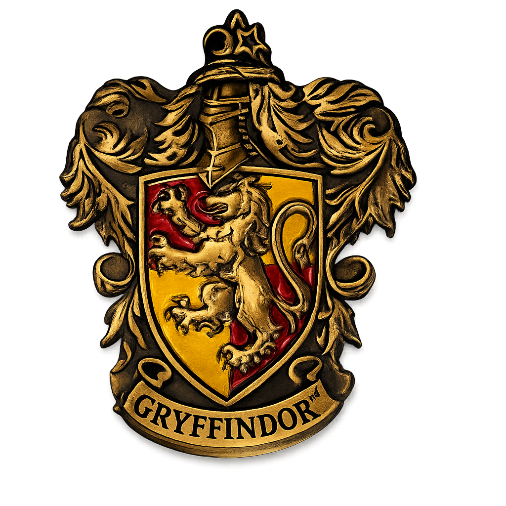

Gryffindor

Gryffindor – The House of the Brave
Founder:
Godric Gryffindor
Head of House

Head of House
Professor Minerva McGonagall, Head of Gryffindor House and Transfiguration Professor.
Professor of Transfiguration at Hogwarts
Known for bravery, intelligence, and discipline
Very loyal to Hogwarts and its students
An Animagus who can transform into a cat
What is it like to be an gryffindor
Symbol: The Lion (representing bravery).
Core values
Courage: Facing fears regardless of the outcome.
Bravery: Boldness in the face of danger.
Determination: A "never-give-up" attitude.
Rebellious: A willingness to challenge authority for what is right.
Competitive: Takes everything—even a simple board game—very seriously!
Famous Alumni
You would be joining the ranks of some of history's most influential witches and wizards:
Albus Dumbledore: Former Headmaster and legendary wizard.
Harry Potter: The Boy Who Lived.
Hermione Granger & Ron Weasley: Heroes of the Second Wizarding War.